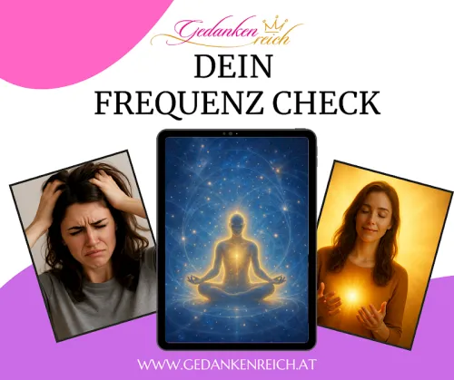

Frequenz-Check – Der intuitive Bewusstseins-Test
Produktprofil · Marktplatz-Daten 2026-10-13 · Verkaufsseiten-Recherche 2026-10-13 · Kategorien: Spirituality & Esotericism, Services
- Frequenz-Check – Der intuitive Bewusstseins-Test ist ein/e Mitgliederbereich & Videokurs in Spirituality & Esotericism und Services, vertrieben über den Digistore24-Marktplatz von Anbieter AndreasTauscher, gelistet seit 2025-12-02.
- Listenpreis $37.49; Digistore24 meldet — Checkout-Konversion, — Stornierungsquote und 50 % Affiliate-Provision.
- Verdienst pro Verkauf (Affiliate): $18.75 (Anbieter-seitige Statistik, keine Prognose).
Interesse an Frequenz-Check – Der intuitive Bewusstseins-Test? Aktueller Preis, Boni und Garantiebedingungen finden Sie auf der offiziellen Seite des Anbieters:
Offizielle Verkaufsseite ansehen
Affiliate-Link (Werbung) — wir verdienen ggf. eine Provision, ohne Mehrkosten für Sie.

Marktplatz-Daten
| Produkttyp | Mitgliederbereich & Videokurs |
|---|---|
| Preis | $37.49 (Single payment) |
| Affiliate-Provision | 50 % |
| Garantie/Rückgabe | Laut Verkaufsseite des Anbieters — vor dem Kauf auf der offiziellen Seite prüfen |
| Anbieter | AndreasTauscher (gelistet seit 2025-12-02) |
| Marktplatz-Statistiken* | Checkout-Konversion — · Stornoquote — · Verdienst/Verkauf $18.75 |
* Anbieter-seitige Statistiken von Digistore24; sie hängen von der Traffic-Qualität ab und sind keine Prognose.
Marktplatz-Beschreibung des Anbieters
Der Frequenz-Check ist ein intuitiver, leicht verständlicher Manifestations- und Bewusstseinstest, der Kund:innen in wenigen Minuten zeigt, auf welcher Frequenz sie aktuell im Leben stehen – und welche energetischen Muster ihre Ergebnisse beeinflussen. Der Test spricht vor allem Frauen zwischen 30–60 Jahren an, die sich für persönliche Entwicklung, Manifestation, Spiritualität, Energiearbeit und Selbstreflexion interessieren. Die Zielgruppe ist extrem kaufbereit, weil sie sofort erkennt, welchen direkten Nutzen der Test bietet. Warum sich der Frequenz-Check so gut verkaufen lässt: Niedriger Einstiegspreis (39,90 €) → ideal für Impulskäufe Hohe Conversionrate → Frauen lieben Tests & Selbstanalysen Emotionaler Nutzen → sofortige Klarheit über die eigene Frequenz Perfekt für Social Media → Fragen, Reels, Storys und kurze Erklärvideos Kein technisches Vorwissen notwendig → der Test erklärt sich selbst Digitale Auslieferung sofort nach Kauf → hohe Zufriedenheit Perfekt geeignet für folgende Zielgruppen: Manifestations- & Mindset-Communities Spiritualität, Energiearbeit, Tarot, Astrologie Coaching, Mentoring, Heilarbeit Psychologie, Identität, Selbstwert Beziehung, Trauma-Healing, Selbstfindung Frauen-Fokus-Kanäle (Selflove, Empowerment, Persönlichkeitsentwicklung) Warum Affiliates mit dem Frequenz-Check gute Umsätze erzielen: Attraktiver Verkaufspreis + starke Nachfrage Klarer, sofort erkennbarer Mehrwert Emotionaler Trigger: „Wo stehe ich wirklich?“ Ein Produkt, das leicht zu erklären ist und sich von selbst verkauft Ideal als Einstieg in tiefergehende Frequenz- oder Manifestationsthemen Marketing-Hinweise für Affiliates Der Frequenz-Check verkauft sich besonders gut mit folgenden Botschaften: „Mach den Test – welche Frequenz hält dich zurück?“ „Dieser Check zeigt dir, warum Manifestieren bei dir (noch) nicht klappt.“ „Finde heraus, welche Identität du wirklich lebst.“ „Viele spüren, dass sie bereit sind für mehr – aber senden noch eine alte Frequenz aus.“ „Dieser Test bringt Klarheit, bevor die Transformation beginnt."
Von der Verkaufsseite des Anbieters
Seitentitel: Frequenz Check - Dein Guide zur Bewusstseinsbestimmung
Hauptüberschrift
Frequenz Check - Dein Guide zur Bewusstseinsbestimmung
39,90 €
39,90 €
Abschnitts-Überschriften
- Datenschutzeinstellungen
- Anita
- Thomas
- Renate
Einstiegstext
Wir nutzen Cookies auf unserer Website. Einige von ihnen sind essenziell, während andere uns helfen, diese Website zu verbessern.
Essentielle Cookies ermöglichen grundlegende Funktionen und sind für das ordnungsgemäße Funktionieren der Website erforderlich.
Ein tiefgehender Selbsttest, der dir zeigt, wo du energetisch stehst - und wie du dein Bewusstsein sofort verändern kannst.
Was wäre, wenn deine Manifestationen nicht an Technik scheitern – sondern an deiner Frequenz, bzw. eher an deinem Bewusstsein?
Recherche-Methode: rohes HTML · 534 Wörter · Qualität: rich · recherchiert am 2026-10-13. Vollständige Recherche-Datei (MD) ↗
Wie Produkte dieser Art geliefert werden
Allgemeiner Hinweis zu diesem Produkttyp (keine anbieterspezifische Anleitung): Videokurse laufen über einen Mitgliederbereich: nach dem Checkout erhalten Sie Zugangsdaten per E-Mail und können die Lektionen in Ihrem eigenen Tempo streamen. Für die genaue Anwendung von Frequenz-Check – Der intuitive Bewusstseins-Test sind die offizielle Verkaufsseite und die enthaltenen Materialien maßgeblich.
Gut zu wissen
- Keine Garantie-Formulierung in unserer Recherche gefunden — bestätigen Sie das Rückgabefenster auf der offiziellen Seite, bevor Sie kaufen.
- Marktplatz-Zahlen (Preis, Provision, Konversion, Stornoquote) — Quelle: offizielle Digistore24-Marktplatz-API (Affiliate-Sicht), Stand 2026-10-13. Gegenprüfung: Marktplatz-Suche nach Produkt-ID 652397.
- Verkaufsseiten-Zitate — Quelle: https://andreas-tauscher.coachy.net/lp/frequenz-check/, abgerufen 2026-10-13 (Methode: rohes HTML). Verify: offizielle Seite öffnen.
- Garantie / Rückgabe — vom Anbieter festgelegt; vor dem Kauf auf der Verkaufsseite bestätigen.
- Nicht von uns geprüft: Produktqualität, Ergebnisse, Testimonials — kein Praxistest für dieses Listing durchgeführt.
Häufige Fragen zu Frequenz-Check – Der intuitive Bewusstseins-Test
Antworten aus dem Marktplatz-Snapshot (2026-10-13) und der Verkaufsseiten-Recherche (2026-10-13); Anbieteraussagen sind inline gekennzeichnet.
Was ist Frequenz-Check – Der intuitive Bewusstseins-Test?
Frequenz-Check – Der intuitive Bewusstseins-Test ist ein Angebot des Typs „Mitgliederbereich & Videokurs" im Digistore24-Marktplatz, Anbieter: AndreasTauscher, gelistet seit 2025-12-02. Eingepflegt unter Spirituality & Esotericism und Dienstleistungen. Digistore24 wickelt Checkout, Lieferung und Rückgaben ab.
Wie viel kostet Frequenz-Check – Der intuitive Bewusstseins-Test?
Der Digistore24-Marktplatz listet es für $37.49 (single payment). Preise legt der Anbieter fest und können sich ändern — der Marktplatz-Eintrag oben zeigt den Schnappschuss; die offizielle Verkaufsseite zeigt den aktuellen Preis.
Gibt es eine Geld-zurück-Garantie für Frequenz-Check – Der intuitive Bewusstseins-Test?
Unsere Verkaufsseiten-Recherche hat keine explizite Garantie-Formulierung gefunden. Viele Digistore24-Produkte bieten 60 Tage Geld-zurück, aber das legt jeder Anbieter selbst fest — bestätigen Sie es auf der offiziellen Verkaufsseite, bevor Sie kaufen.
Ist Frequenz-Check – Der intuitive Bewusstseins-Test seriös?
Wir bewerten keine Seriosität — wir veröffentlichen überprüfbare Zahlen: Anbieter AndreasTauscher (gelistet seit 2025-12-02), Checkout-Konversion —, Stornoquote —, Affiliate-Verdienst/Verkauf $18.75 (alles Anbieter-seitige Marktplatz-Statistiken). Lesen Sie unsere 6-Punkte-Bewertungsmethode und entscheiden Sie anhand der Zahlen — oder diskutieren Sie Frequenz-Check – Der intuitive Bewusstseins-Test auf GitHub.
Wo kann ich Frequenz-Check – Der intuitive Bewusstseins-Test sicher kaufen?
Nur über die offizielle Verkaufsseite, die auf dieser Seite verlinkt ist (Checkout und Rückgaben laufen über Digistore24). Prüfen Sie dort Preis und Garantie vor der Bestellung. Der Link ist ein Affiliate-Link — der Kauf unterstützt diese Website ohne Mehrkosten für Sie.
Wie erhalte ich Frequenz-Check – Der intuitive Bewusstseins-Test nach der Zahlung?
Der Checkout läuft über Digistore24: Nach der Zahlung erhalten Sie Ihren Zugang oder Download per E-Mail und in Ihrem Digistore24-Kundenkonto. Lieferdetails für diesen Produkttyp: Videokurse laufen über einen Mitgliederbereich: nach dem Checkout erhalten Sie Zugangsdaten per E-Mail und können die Lektionen in Ihrem eigenen Tempo streamen. Bei Problemen kann der Digistore24-Käufersupport Ihre Bestellung wiederherstellen.
Alle 50 Käuferfragen zu Spirituality & Esotericism — das komplette Kategorie-FAQ.
Frequenz-Check – Der intuitive Bewusstseins-Test auf Reddit diskutieren
In Community-Threads vergleichen echte Käufer Erfahrungen. Wir verlinken Communities, keine einzelnen Posts — Threads verschwinden, Subreddits bleiben:
- Reddit-Suche nach „Frequenz-Check – Der intuitive Bewusstseins-Test" — Live-Ergebnisse, von uns nicht beeinflusst.
- Top-„Erfahrungs"-Treffer dieses Jahr — selbst nach Aktualität filtern.
Passendes auf Amazon.de
Physische Produkte und Zubehör, die häufig zusammen mit Frequenz-Check – Der intuitive Bewusstseins-Test gekauft werden:
- Meditation Bücher auf Amazon.de — Top-Ergebnisse, Amazon-Ranking.
- Bestseller: Meditation Bücher — live Liste von Amazon, von uns nicht kuratiert.
Werbung: Als Amazon-Partner verdient DigistorePicks DE an qualifizierten Käufen (Partner-tag adminstorede-21). Amazon setzt eigene Preise und Provisionen (niedrige einstellige Prozente — weit unter den 30–75% der Digistore24-Anbieter). Amazon ist ein Convenience-Angebot für Sachprodukte, kein Ersatz für das digitale Produkt oben.
Ähnliche Angebote in Spirituality & Esotericism

WOLKENWEICH Online-Begleitung - Dein 6-monatiger Premium Zugang - eingebettet, stabil von allen Seiten, geerdet, sicher, geborgen, ruhig Du erhältst einen Premi

bis zu 10% Provision | 600.000€ Umsatzpotenzial für 2026 Marktplatz-Beschreibung Sichern Sie sich Ihren Anteil am Erfolg: Wir suchen exklusive Partner für ein 6

Bis zu 10% Provision | 600.000€ Umsatzpotenzial für 2026 Marktplatz-Beschreibung Sichern Sie sich Ihren Anteil am Erfolg: Wir suchen exklusive Partner für ein 6

Glückscoach-Jahresausbildung Empfehlen Sie einen hochwertigen, kostenlosen Online-Einstieg zum Thema Glück & Lebensfreude , der Teilnehmer schrittweise zu e
Frequenz-Check – Der intuitive Bewusstseins-Test ist auch gelistet in
Dienstleistungen (104 Produkte)
Ähnliche Preislage in Spirituality & Esotericism

NEU! NEU! NEU! Partizipiere von einer sehr großen Zielgruppe von Pflanzenliebhabern und von Menschen, die eine enge, spirituelle Verbundenheit zur Pflanzenwelt
Der Videokurs „Erhelle dein Leben“ – für mehr Klarheit, Bewusstsein und innere Balance wird angeboten. Perfektes Geschenk für deine Community! Der Kurs hilft da

Verdiene bis 50% wiederkehrende Provision + Upsellprovision pro geworbenen Kunden Empfiehl eine der am schnellsten wachsenden Manifestations-Communities und bau

Die „Soforthilfe für sensible Tiere“ ist für Tierhalterinnen, deren Tier bei Lärm, Gewitter, Tierarztbesuchen, Besuch oder Veränderungen in Stress oder Panik ge
Ähnliche Suchanfragen
Wo Sie es sich ansehen können
Wo Sie es sich ansehen können
Aktuelle Preise, Garantie und Boni finden Sie auf der offiziellen Verkaufsseite:
Offizielle Verkaufsseite ansehen
Das ist ein Affiliate-Link (Werbung) — kaufen Sie darüber, verdienen wir ggf. eine Provision, ohne Mehrkosten für Sie.
Quellen & weiterführende Informationen
- Offizielle Verkaufsseite (aktueller Preis, Garantie, Boni): andreas-tauscher.coachy.net/lp/frequenz-check/ (Affiliate-Link)
- Öffentliche Digistore24-Produktseite: digistore24.com/product/652397
- Vollständige Recherche-Datei (Markdown, versioniert): content/products/54846-frequenz-check-der-intuitive-bewusstseins-test.md
- Marktplatz-Kategorie: Spirituality & Esotericism
Wie wir Produkte wie Frequenz-Check – Der intuitive Bewusstseins-Test bewerten
Sechs Prüfungen, ausschließlich mit offiziellen Marktplatz-Zahlen. Die vollständige Bewertungsmethode lesen · unsere Recherche-Standards & Kennzeichnung.
Fragen oder eigene Erfahrungen mit Frequenz-Check – Der intuitive Bewusstseins-Test?
Praxis-Tests veröffentlichen wir erst, nachdem wir ein Produkt selbst gekauft haben — aber Ihre Erfahrung hilft anderen Lesern: Diskussion zu Frequenz-Check – Der intuitive Bewusstseins-Test auf GitHub starten/verfolgen. Falsche Zahl gefunden? Korrektur melden — jede Seite zeigt ihre Datenstände, Korrekturen gelten für die ganze Website.